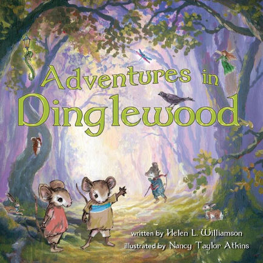

Welcome to Helen Williamson’s enchanting tales for children of all ages. If you love dinosaurs who wear polka dot slippers, if you have pineapple dreams, higgledy-piggledy thoughts or like to escape into fairy tales, you’ll love Helen’s whimsical world. There’s no other world quite like it!

|
Helen was born in Holywood, County Down in Northern Ireland. In the Irish tradition, books and the telling of tales have enchanted her since she was a child, and writing and telling her own stories is just a projection of this love.
She received a BA and MA from Trinity College in Dublin and now lives in Charlottesville, Virginia, with her husband. Helen continues to generate stories that delight readers with her amusing and playful perspective on the world. She is the author of Tales from Balladhoon, A Pineapple Dream and other Nonsense, Higgledy-Piggledy Thoughts, and I Just Met A Dinosaur! And now, her newest children’s book, Adventures In Dinglewood, is available! Come join the fun and explore! |
Adventures In Dinglewood is available now in paperback and hardcover!
|  |
If you are in a hurry, you might pass by Dinglewood without paying much attention. But if you listen carefully, you just might hear the pitter-patter of small feet and the chattering of tiny voices. Turn the page— There’s a world of adventure here in Dinglewood for you to discover!
“. . . Adventures in Dinglewood is sure to take its place alongside many long-loved children’s books as a delightful modern classic.” — Kai Rady, Toy and Book Buyer, Shenanigans (est. 1974), Charlottesville, VA, USA “Helen Williamson and Nancy Atkins charm young readers with the magical adventures of Henrietta and Jasper as they encounter Dinglewood’s many zany woodland creatures. . . Adventures in Dinglewood would be a wonderful addition to any child’s bookshelf.” — Anna Burger, author of Pea Soup and the Seafood Feast and The Sea Hunt |
I Just Met A Dinosaur!, an exciting children's book by Helen Williamson, is now available!

|
If you met a dinosaur, what would you do? Play hide-and-seek or go to the zoo? Who knows if their skin was pink, purple, or blue? Or if they squawked, roared, or mooed? Did they polish their nails and feathers and scales, And sharpen their teeth with the ends of their tails? When you open this book of dinosaur rhymes You’ll meet some of those creatures from long-ago times! |